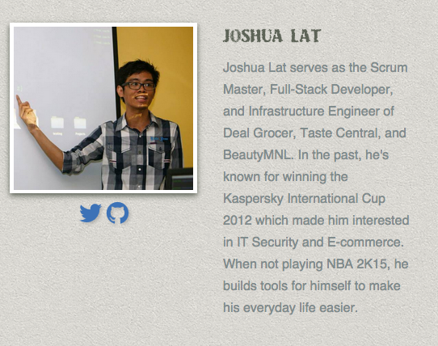

My topic got accepted!
A few months ago, I got invited by a friend from Engine Yard to submit a topic for RubyConf.PH 2015. I decided to give it a try since it would be a great opportunity for me to share what I have learned for the past couple of years. I was planning to submit 3 proposals but due to my busy schedule, I only got to submit one. Luckily, my topic got accepted!

A week later, RubyConf.ph released the list of speakers for the conference this coming March 28 to 29. I'm lucky to be part of this awesome group and I'll make sure I do not disappoint.